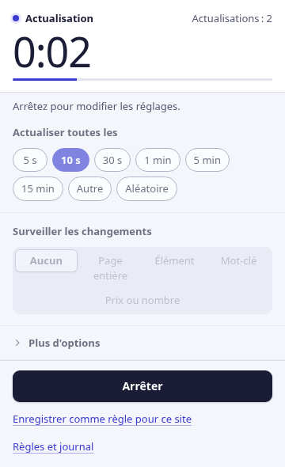
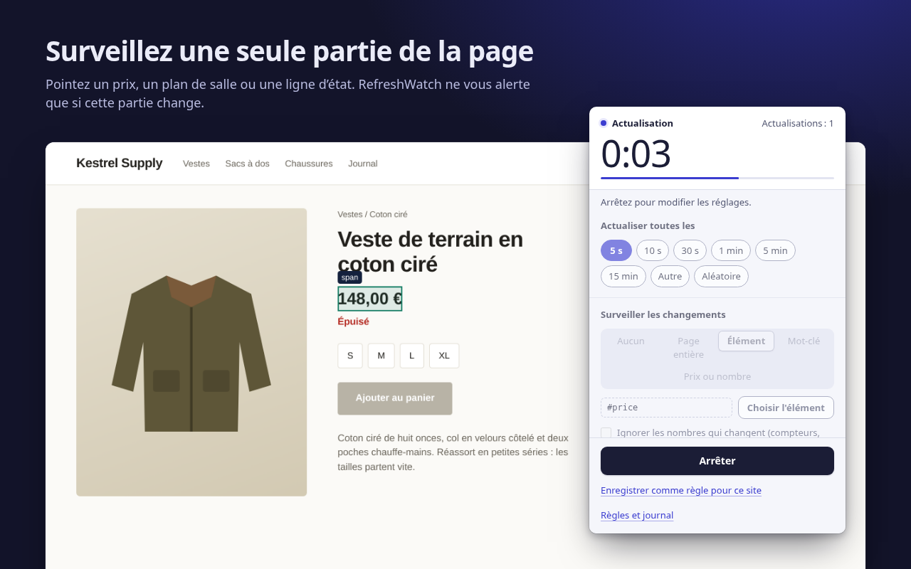
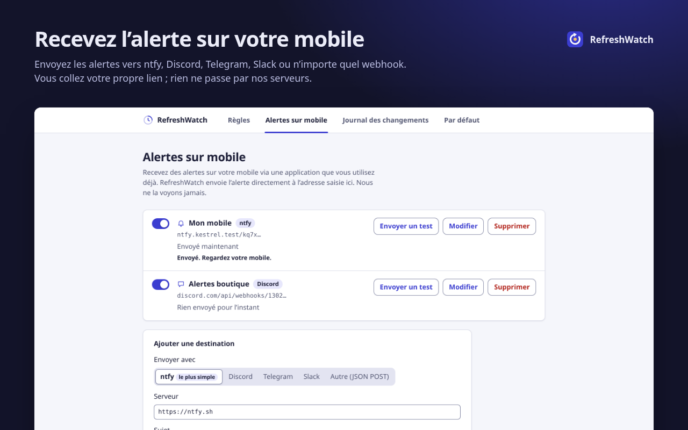
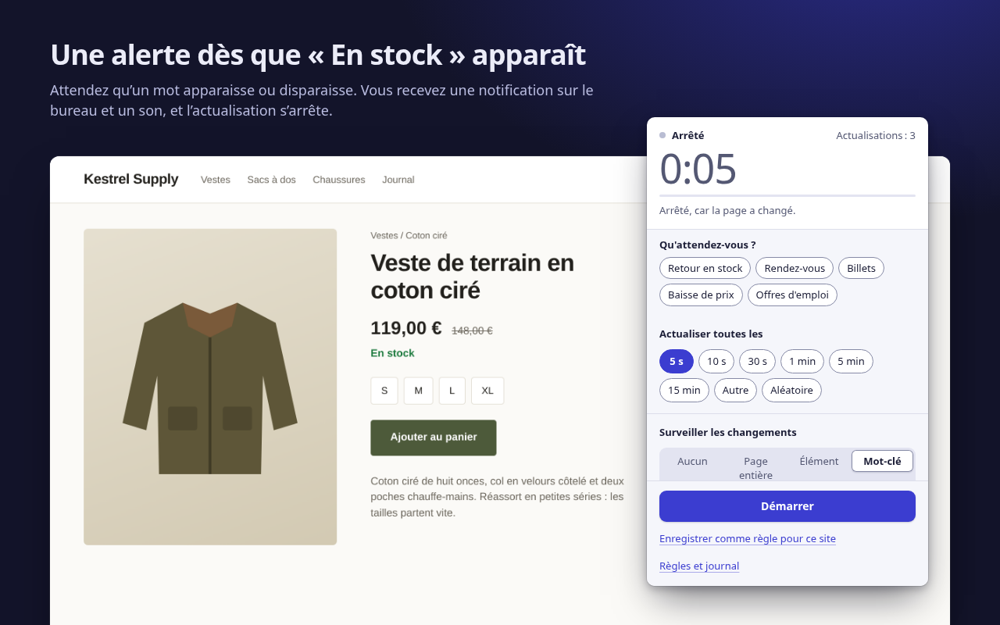

Il actualise. Vous êtes prévenu.
RefreshWatch recharge n’importe quel onglet Chrome à intervalle régulier et vous prévient dès que la page change : un nouveau prix, un mot comme « En stock », un créneau de rendez-vous qui se libère.
Aucun compte. Aucun serveur à nous. Pour Chrome 120 et versions ultérieures.

Dites-lui quoi surveiller
Pour une simple actualisation automatique, un intervalle suffit. Ajoutez une surveillance : RefreshWatch compare la page après chaque rechargement, puis vous alerte par une notification et un son.
La page entière
Tout changement du texte visible. Activez « Ignorer les nombres qui changent » pour que les horloges et les compteurs ne déclenchent rien.
Un élément
Pointez un prix, un plan de salle ou une ligne d’état. Seule cette partie compte : le reste de la page peut changer librement.
Un mot-clé
Une alerte quand un mot apparaît, comme « En stock », ou quand il disparaît, comme « Aucun rendez-vous disponible ».

Des alertes sur votre mobile, et les baisses de prix
Ajoutez votre propre sujet ntfy, votre adresse Discord, Telegram ou Slack, ou n’importe quel webhook : RefreshWatch y envoie l’alerte directement. Pas de compte chez nous, et rien ne passe par nos serveurs.
Recevoir une notification sur mobile quand un site change · Alerte de baisse de prix pour Chrome (en anglais)

Gratuit : des fonctions que d’autres extensions font payer
Chacune des fonctions ci-dessous est réservée à une offre payante dans au moins une extension populaire d’actualisation automatique ou de surveillance de page. Dans RefreshWatch, elle fait simplement partie de l’extension : pas d’offre payante, pas d’essai, pas de compte. Certains extras payants proposés ailleurs, comme les macros, les alertes par e-mail ou SMS et les vérifications dans le cloud, n’existent tout simplement pas dans RefreshWatch.
| Fonction | Ce que vous obtenez | RefreshWatch |
|---|---|---|
| Surveiller une partie de la page | Choisissez n’importe quel élément ; alerte seulement s’il change | Gratuit |
| Alertes par mot-clé | Un mot ou une expression apparaît, ou disparaît | Gratuit |
| Cliquer sur un bouton après le rechargement | Choisissez le bouton et le délai d’attente | Gratuit |
| Intervalle aléatoire | N’importe où entre deux valeurs, de 1 seconde à 24 heures | Gratuit |
| Réglages enregistrés par page | Des règles par URL exacte, début d’adresse ou caractère générique, qui démarrent toutes seules | Gratuit |
| Aucune limite de surveillance | Autant d’onglets et de règles que vous voulez | Gratuit |
| Journal des changements | Les 50 derniers changements, avec le texte avant et après | Gratuit |
Comparaison avec les offres payantes indiquées sur le Chrome Web Store et sur les pages de tarifs des éditeurs, vérifiées le 9 octobre 2026. La comparaison avec une extension bien connue se trouve sur la page consacrée à l’alternative (en anglais).
Rien ne passe par nous
RefreshWatch lit et compare les pages sur votre ordinateur. Il n’a aucun serveur à lui. La seule chose qu’il envoie, c’est une alerte, vers une destination mobile que vous avez configurée vous-même.
- Aucun compteInstallez-le et c’est parti : aucune inscription n’est nécessaire.
- Ni statistiques, ni publicité, ni pistageAucune requête réseau, à part les alertes sur mobile que vous configurez.
- Accès aux sites, un site à la foisLa simple actualisation automatique n’a besoin d’aucun accès aux sites. Quand vous activez la surveillance sur un site, Chrome vous demande votre accord pour ce seul site.
- Stocké en localRègles, réglages et journal des changements restent dans Chrome sur cet ordinateur, et disparaissent quand vous supprimez l’extension.
Trois étapes, de l’onglet ouvert à l’alerte
Choisissez un intervalle
Cliquez sur l’icône RefreshWatch dans l’onglet. Choisissez de 5 s à 15 min, une durée personnalisée ou une plage aléatoire.
Choisissez quoi surveiller
La page entière, un élément que vous pointez, ou un mot-clé. Ou rien du tout, pour une simple actualisation automatique.
Recevez l’alerte
Dès que le changement arrive, vous recevez une notification et un son, et l’actualisation s’arrête. Enregistrez le tout comme règle pour que cela démarre tout seul la prochaine fois.

Arrêtez de cliquer sur Actualiser
Gratuit sur le Chrome Web Store, en anglais, arabe, allemand, espagnol, français, japonais, portugais du Brésil, chinois simplifié et russe.